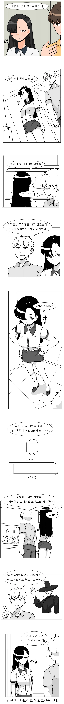

등장하는 캐릭터가 뭐여 실존인물이었어?
작가 본인이 전에 만화에 뭐가 나오면 실제 이야기이고, 뭐가 안나오면 창작 이야기라고 했던거 같은디, 뭐였는지 기억이 안나네 ㅋㅋ
인셉션이여?
나도 봤는데 뭐였더라
오싹오싹
쟝 거리면 실존인물임
머리 묶은 방향이었나 뭐 그랬는데 뭐더라
누나 머리묶은거면 실화 아님? 반댄가?
누나가 머리 묶으면 실화고 아니면 구라라고 했었는데 요즘 누나가 등장을 잘 안하니..
근데 학생들 이야기는 대부분 실화기반인거 같음
안돼 지윤아 가지마
그래 빨리 누나만 그려
쟝...
나는 최근에 25x25×35cm어항에서 45×17×33cm어항으로 갈아탔다.
폭이 17이라고라
앞뒤로 17cm
엄청난 개변태 어항
대체 얼마나 잘생겼으면 어항 얘기도 귀기울여서 잠자코 들어주는 거냐아아아앗!!!
쟈쟝면~
나도 어항 증식시키면서 폴립에 디스커스에 키워 봤었는데 환수진짜 존나 귀찮고 힘들어서 걍 어항 싹다 정리하고 지금은 레게랑 피그미다람쥐 키운다 ㅋㅋ
자동환수를 했어야지
4자광을 사기 위해 필요한 것 : 단독주택
4자 정도는 120 45 45 정도는 아파트도 충분해 물양 생각보다 얼마안됨 200리터 정도
옛날에 물갤에 8자인가 아파트에 쳐넣었다가 물고기 제사지내던 병신 보고 든 생각인데 그냥 3자 넘는건 아파트에 넣으면 안됨;
어항과 축양장 도합 250키로 짜리도 못넣는 집은 집이 아니야...
그때 그건 섬프포함 3톤이 넘는 규모였고
수능 잘보렴
어항에는 낭만이 있다.